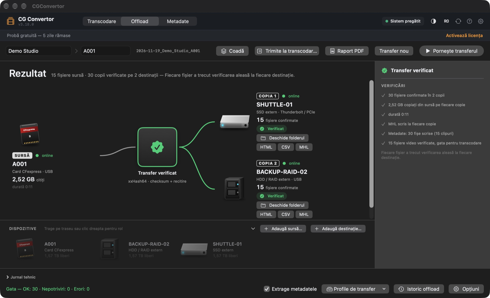
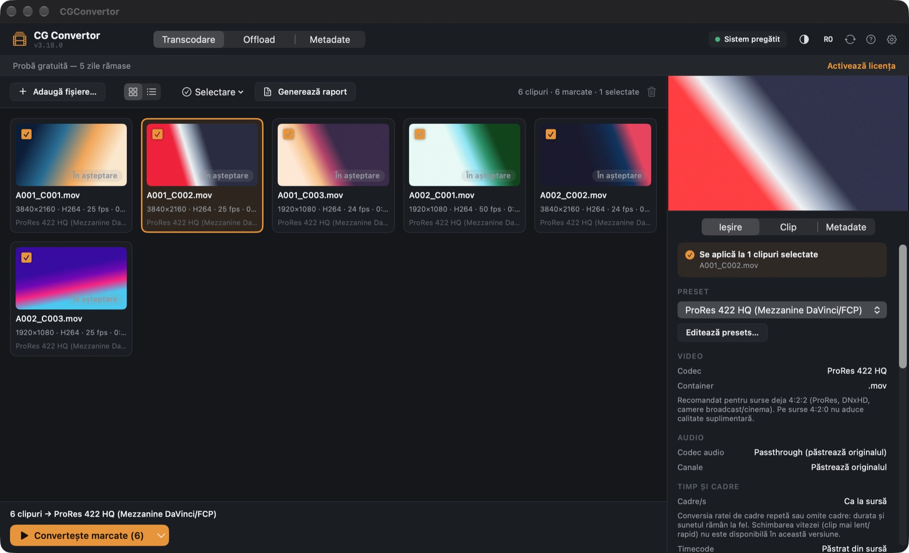

Transcode și rewrap, cu metadatele sursei la locul lor.
Convertești clipurile pentru DaVinci Resolve, iar timecode-ul și pistele native ale camerei rămân în fișier când imaginea rămâne Log. Fiecare clip are un raport: ce s-a păstrat, ce nu și de ce.
macOS 14 sau mai nou · Mac cu Apple Silicon · versiunea 3.18.0
Windows 10/11 pe 64 de biți · versiunea 3.18.0, preliminară · instalatorul nu are încă semnătură de încredere publică, iar Windows poate afișa un avertisment SmartScreen

O singură aplicație: transcodezi, copiezi verificat, citești metadatele.
Aceleași clipuri și aceleași setări în toate trei, cu un inspector în dreapta, temă deschisă, închisă sau a sistemului, în română, engleză și spaniolă.

Transcodare
- Tragi clipurile în fereastră; grilă sau listă; marchezi ce se convertește.
- Inspector cu previzualizare, presetare, audio, timp și cadre, destinație și denumire cu exemplu.
- Valorile diferite dintre clipuri se văd ca atare; nimic nu se suprascrie pe tăcute.
- Rezumat și avertismente înainte de pornire; progres, viteză și timp rămas când pot fi estimate.
Offload — copiere verificată
- Una sau mai multe destinații, raport cu MHL; originalele rămân neatinse și nimic nu se șterge automat.
- „Copiat” nu înseamnă „verificat”; eșecurile se văd pe fiecare destinație.
- Către transcodare se trimit doar fișierele verificate prin sumă de control, fără pornire automată.
- Coadă de operații, extragerea metadatelor lângă copiile verificate și raport PDF cu sursele și copiile verificate.
Metadate
- Gamut și curbă separate, timecode cu tipul lui, producător, model, obiectiv.
- Fiecare valoare spune de unde vine; necunoscutul rămâne necunoscut.
- Valorile manuale rămân în aplicație și în fișa exportată; originalul nu se modifică.
Ce se păstrează, verificat în fișierul rezultat.
Aplicația scrie, apoi recitește independent. Nu declară Rec.709 doar pentru că o matrice e bt709 și nu presupune profilul din modelul camerei sau din numele fișierului.
Raport per clip, cu stări distincte
- Detectat în sursă — citit din date native, etichetă a producătorului sau dedus (se spune care).
- Încorporat și verificat — scris în fișier și recitit.
- Necesită aplicare separată — există doar în sidecar.
- Necunoscut sau nepăstrat — cu motivul.
Timecode
Inclusiv drop-frame la Sony, scris și recitit din rezultat.
Sidecar
Un fișier „.gdc-metadata.json” lângă rezultat, pentru ce Resolve nu citește din fișier.
Piste native
Canon „cndm”, Sony „rtmd”: copiate fără modificare, tăiate la cadrele convertite, verificate prin sumă de control. Doar cât timp imaginea rămâne Log, în MOV.
INTERVAL
Alegi începutul și sfârșitul unui clip. Limitele se aliniază la cadre; imaginea, sunetul, timecode-ul și pistele native pornesc din punctul ales.
Compatibilitate demonstrată pe probe.
Rezultate din proiecte Resolve izolate (Resolve 21.2), pe camerele testate. Nu sunt valabile pentru toată marca și nu verifică fiecare clip.
| Cameră testată | Ce citește Resolve din fișierul convertit | Cum ajunge profilul în Resolve |
|---|---|---|
| Canon EOS C50 | Metadate informative și, în proiecte Color Managed v2, Input Color Space — automat. | Din pista nativă păstrată. |
| Sony A7 IV | Doar timecode. | Prin sidecar sau punte (aplicare separată). |
| Panasonic DC-S1 | Doar timecode. | Prin sidecar sau punte (aplicare separată). |
Ce nu face, spus direct.
Pistele native nu se păstrează
când alegi o etichetă de culoare, schimbi cadrele/s sau containerul nu e MOV. Raportul spune motivul.
Un fișier valid nu e automat complet
dacă scrierea metadatelor eșuează, clipul apare cu avertisment, nu ca succes complet.
Profilul Log nu e atribuit automat în Resolve la toate camerele
Verificat: Canon C50. La Sony A7 IV și Panasonic DC-S1 Resolve citește doar timecode-ul; celelalte mărci nu au fost testate. Alegi profilul manual în Resolve; CGConvertor nu schimbă imaginea și nu etichetează Log drept Rec.709.
Decodare hardware oprită
pe un clip Panasonic H.264 4:2:2 rezultatul a diferit de decodarea software; rămâne dezactivată.
Doar pentru Mac cu Apple Silicon
Aplicația cere macOS 14 sau mai nou și un Mac cu Apple Silicon; nu există versiune pentru Mac cu procesor Intel.
Originalele nu sunt modificate. ExifTool este opțional și neinclus; fără el, câmpurile necitite apar ca „necunoscut”.
Ghiduri și istoric.
Istoricul versiunilor
Probă de 5 zile, apoi licență.
Probă
5 zile de acces complet de la prima pornire. Probele deja începute își păstrează durata inițială.
Licență
3, 6 sau 12 luni, sau perpetuă, legată de calculatorul tău. Aplicația nu folosește donații. Condițiile se comunică pe canalul de contact.
Cerințe
macOS 14 sau mai nou, Mac cu Apple Silicon (aplicație semnată Developer ID și notarizată). Versiunea Windows (3.18.0, preliminară) cere Windows 10/11 pe 64 de biți; instalatorul nu are încă semnătură de încredere publică.
Aplicația este semnată Developer ID și notarizată. Instalarea pe un Mac curat și tema „Sistem” în timpul rulării nu au fost verificate separat; spune-ne ce întâmpini.